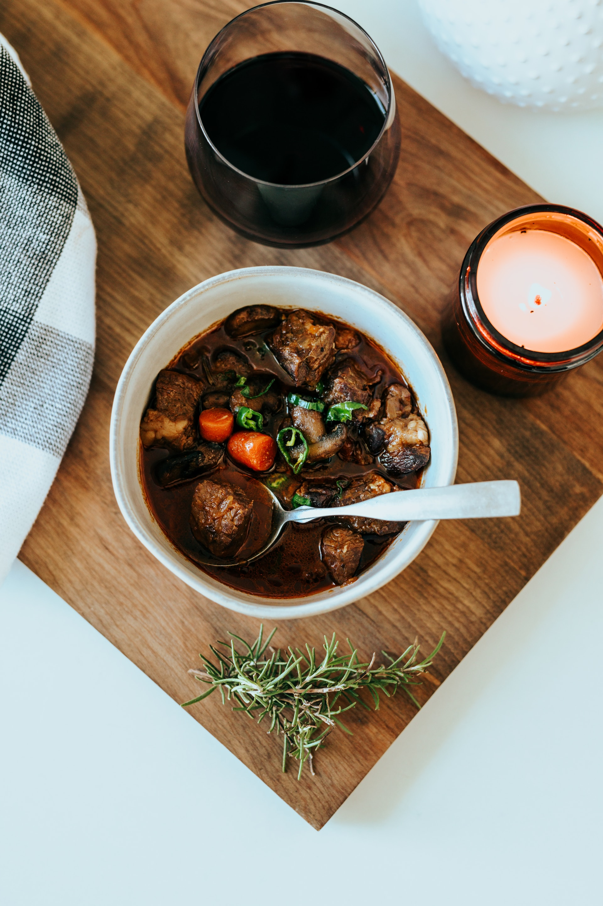

Romanian Polenta

Ingredients
- 4 cups of milk
- 2 tbsp of unsalted butter
- 2 cups of quick-cooking cornmeal
- Kosher salt and freshly ground black pepper
- 1 cup finely crumbled feta cheese
- 1 cup sour cream
Instructions:
- Step 1: Bring milk and butter to a boil in a saucepan over high heat
- Step 2: Whisking constantly, add corn meal, salt and pepper. Cook until thickened and corn meal is cooked through.
- Step 3: Stir in half the feta, the transfer to a greased 9" pie dish. Let this cool for about five minutes.
- Step 4: Top with remaining feta, and garnish with sour cream before serving.
Enjoy your Romanian Polenta!